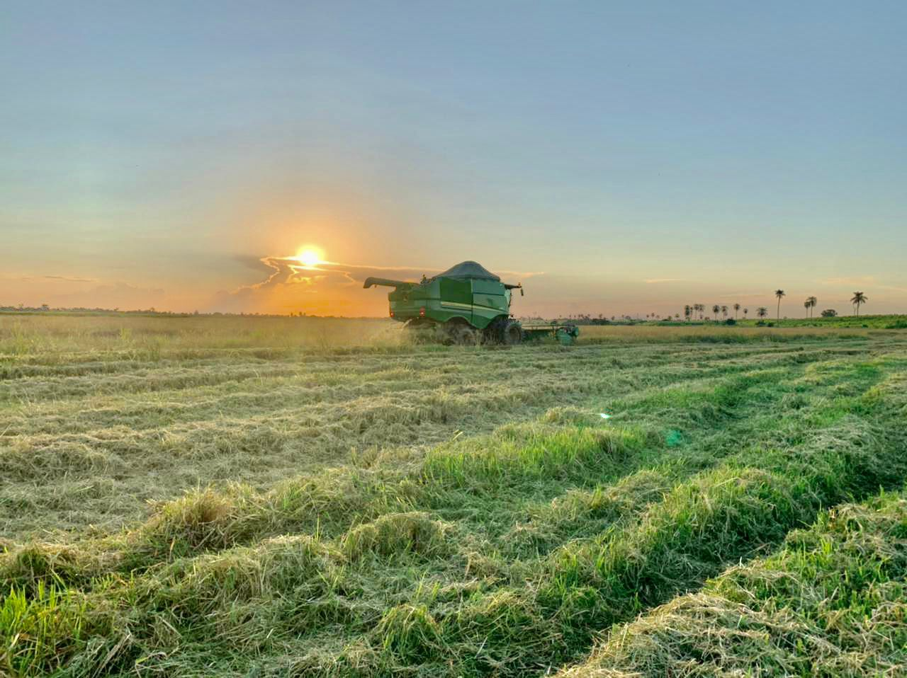

Sobre a São José Agro
A São José Agro é uma pagina da WEB criada em 2022 por Matheus B Moreira no intuito de divulgar a agricultura de nossa região com fins de concorrer no concurso Agrinho Programação e ganhando em 2º lugar.
Nossa missão é: "Entregar conteudos de nossa região para nossos seguidores".
Oferecemos conteudos e informações para você conhecer mais sobre nossa agricultura e agricultores.
Localização
Localização de São José do Ivaí (PR).